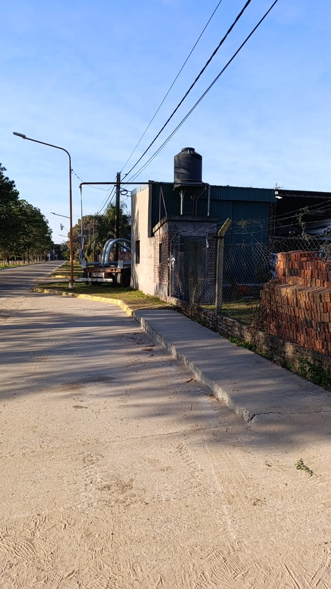

Toma Comuna Aroyolles
Descripción: Toma arroyo leyes calle Ntra Sra del Perpetuo Socorro 20 metros al este de la ruta 1
Accesibilidad: Calle pavimentada, se prende desde la ventana del frente se accede al tablero de la bomba
Tipo de Fuente: Manga superior

La Tapera Casa Particular
Descripción: Pileta Grande se necesita Motobombas y Manga
Accesibilidad: sobre la ruta 1
Tipo de Fuente: Pileta

Municipalidad Sta Fe Deposito paraiso 17
Descripción: Manga 60 bomba en perforaqcion
Accesibilidad: calle los eucaliptus 2000 metros al oeste mano derecha tiene cuidador
Tipo de Fuente: peerforacion con bomba para Manga 60